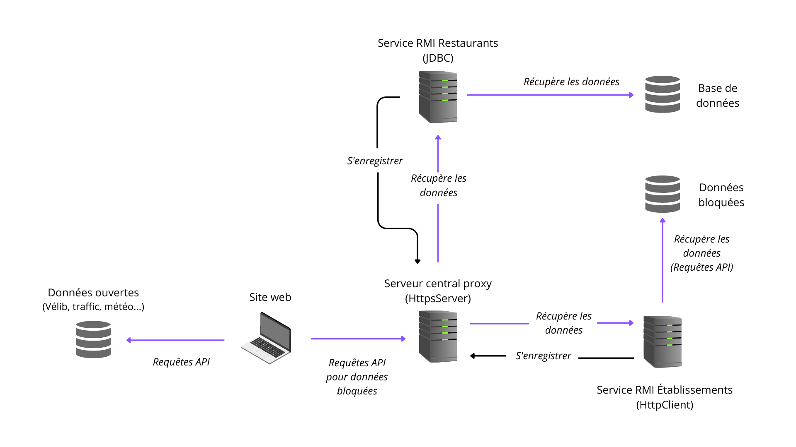

Compte-rendu de la SAE
Architecture du projet
Ce qui a été réalisé
Serveur central proxy :
Nous avons développé un serveur central qui permet de récupérer des données bloquées ou stockées dans une base de données. Il propose une API accessible sur le réseau pour fournir ces données aux clients.
Services RMI :
Les services RMI sont utilisés par le serveur central pour interagir avec d'autres composants du système. Ils permettent d'utiliser des fonctionnalités qui ne sont pas accessibles via des requêtes classiques, facilitant ainsi la récupération de données spécifiques.
Site web :
Nous avons créé un site web comprenant quatre pages principales : Accueil, Carte, Réservation et À propos. L'accueil présente une image et le nom du projet. La page Carte affiche une carte interactive utilisant les informations récupérées, avec des filtres pour permettre aux utilisateurs de sélectionner ce qu'ils souhaitent afficher. La page Réservation contient un formulaire permettant de réserver dans un restaurant, avec une fonctionnalité d'autocomplétion pour faciliter la saisie du nom du restaurant. La page À propos est celle que vous lisez actuellement et contient notre rapport détaillé.
Comment utiliser ce projet ?
Pour utiliser notre projet, vous aurez besoin des informations suivantes :
- Adresse IP du serveur central proxy
- URL pour accéder à l'API fournie par le serveur central
- Ces informations sont essentielles pour utiliser toutes les fonctionnalités de notre projet.
Informations complémentaires
Nous avons utilisé les technologies suivantes pour réaliser ce projet :
- W3.CSS pour le design du site web
- Leaflet pour la carte interactive
N'hésitez pas à consulter notre démonstration pour une utilisation pratique et à nous contacter si vous avez des questions supplémentaires.